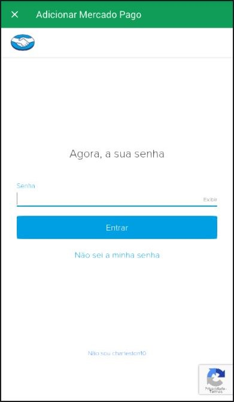

Perguntas & Dúvidas Frequentes - FAQ
Selecionamos algumas perguntas frequentes e outros itens de ajuda
Como mudar o idioma?
Para mudar o idioma escolhido na instalação do aplicativo é bem simples
Abra seu aplicativo TraceFacil vá até o Menu Lateral clicando no ícone igual a este
(
 ), depois selecione a opção Idioma, feito isso vai
aparecer uma lista de idiomas para
escolher, selecione uma e pronto :)
), depois selecione a opção Idioma, feito isso vai
aparecer uma lista de idiomas para
escolher, selecione uma e pronto :)
Como funciona a assinatura?
A assinatura do aplicativo garante que você tenha acesso a todos os traçados do aplicativo.
Modalidade Mensal
Você terá acesso a todos os traçados durante o período de 1 mês, após isso
os traçados
serão bloqueados novamente.
Será cobrado apenas 1 vez no momento da sua assinatura, a nova cobrança será
após 1 mês.
Modalidade Semestral
Você terá acesso a todos os traçados durante o período de 6 meses, após isso
os traçados
serão bloqueados novamente.
Será cobrado apenas 1 vez no momento da sua assinatura, a nova cobrança será
após 6 meses.
Como assino via boleto?
Para realizar a assinatura do aplicativo você precisa adicionar dinheiro via MercadoPago realizando o pagamento via Boleto Bancário. Após o pagamento o valor pago vai estar como crédito em sua conta do MercadoPago onde vai ser possível utilizar esse crédito em quaisquer site conveniado, como por exemplo: Google Play Store e MercadoLivre
O MercadoPago, serviço de pagamentos online, permite que o usuário adicione dinheiro à sua conta no serviço e não use cartão de crédito ou débito em suas compras futuras. O processo é feito com um boleto bancário e permite, por exemplo, inserir créditos no celular, assinar um aplicativo da Google Play ou comprar algo no Mercado Livre através do serviço.
Passo 1. Acesse a sua conta no Mercado Pago através do
deste link e, na aba
"Minha Conta", que fica carregada por padrão ao abrir a página
inicial do serviço, clique em “Adicionar dinheiro à minha conta”;

Passo 2. Nesta tela, é possível digitar o valor desejado e o tipo de pagamento do Mercado Pago. Abaixo, deve inserir o valor que deseja adicionar à conta. No primeiro campo, coloque os reais e no segundo os centavos. Marque a opção "Boleto" como meio de pagamento;
Passo 3. Uma mensagem de impressão do boleto será exibida. Clique em "Imprimir boleto";
Passo 4. Você será redirecionado para o site da instituição financeira (banco) responsável pela emissão do boleto. Imprima-o e pague para receber os créditos no Mercado Pago.
Importante: É importante lembrar que, como o pagamento é feito em boleto, pode demorar até 48 horas para ele ser compensado como saldo na conta Mercado Pago. Por isso, os créditos na sua conta do Mercado Pago também podem demorar um pouco para serem exibidos no site.
Passo 5. Após o pagamento do boleto e o saldo já estiver em conta, siga o
passo-a-passo abaixo para realizar a assinatura do aplicativo usando o Mercado pago

Após seguir todo esse passo-a-passo a assinatura será concluída com sucesso
Formas de Pagamento - Google Play
Cartões de crédito ou débito
Você pode adicionar os seguintes cartões de crédito à sua conta:
*American Express
*Cartões de crédito ELO
*MasterCard
*Visa
Observação: os tipos de cartões aceitos pelo Google Play podem variar.
Talvez haja autorizações
temporárias na sua conta quando você usar um cartão de crédito ou débito. Cartões
de
débito:
Não é possível usar cartões de débito de qualquer tipo (MasterCard, Visa,
Elo etc.)
para compras do Google Play.
Tipos de pagamento não aceitos
Não é possível usar o Google Play com:
*Transferências eletrônicas
*Transferências bancárias
*Western Union
*Money Gram
*Cartões de crédito virtuais (VCC, na sigla em inglês)
*Contas de poupança de saúde (HSA, na sigla em inglês)
*Cartões de transporte público
*Qualquer tipo de garantia de pagamento
Cancelamento da assinatura
O cancelamento pode ser feito em qualquer momento
Cancelei depois que foi feito o pagamento, vou perder acesso aos traçados?
Não. Você não perde o acesso aos traçados.
Os traçados só serão bloqueados após o período que você escolheu acabar.
Exemplo: Fiz uma assinatura de 6 meses, mas eu cancelei no primeiro mês. O
acesso dos
traçados vai ficar durante mais 5 meses e após será bloqueado o acesso.
Para cancelar
1- No smartphone ou tablet Android, abra a Google Play Store .
2- Toque em Menu Assinaturas.
3- Toque na assinatura que você quer cancelar.
4 - Toque em Cancelar assinatura.
5 - Siga as instruções na tela.
Importante: a desinstalação de um app não interrompe automaticamente sua
assinatura.
Você precisa cancelar a assinatura para encerrá-la. Se você desinstalar o app sem
cancelar
a assinatura, ainda haverá cobrança. Se um app que você assinou for removido do
Google
Play, a assinatura futura será cancelada automaticamente, mas as anteriores não
serão
reembolsadas.
Reiniciar ou reativar uma assinatura
Se a assinatura tiver sido cancelada, mas ainda estiver ativa:
1- No smartphone ou tablet Android, abra a Google Play Store .
2- Toque em Menu Assinaturas.
3- Toque na assinatura que você quer reativar.
4- Toque em Reativar.
5- Siga as instruções na tela.
Reembolso para saber mais sobre reebolso clique nesse link
Vai ter mais traçados?
Sim com certeza!
Estamos com nossa equipe trabalhando duro pra isso. Temos mais de 50 traçados já
mapeados
em nossa lista.
Caso tenha algum que usa bastante no dia-a-dia, comente com a gente através
do nosso
canal de contato por e-mail ;)